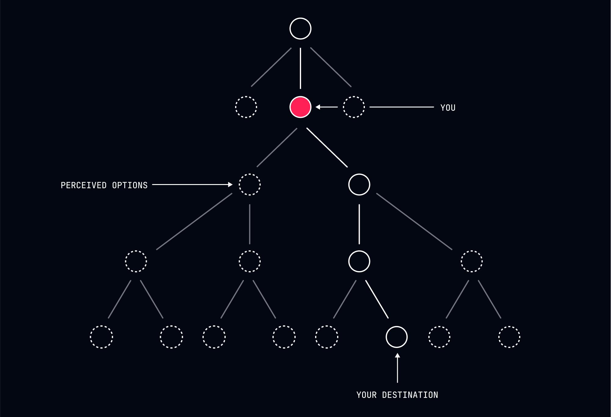
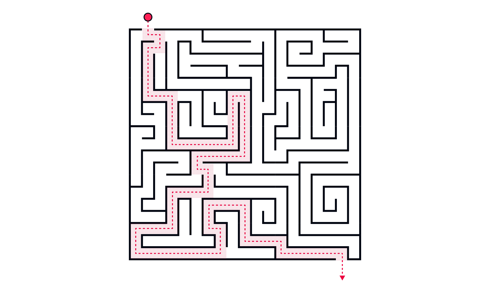
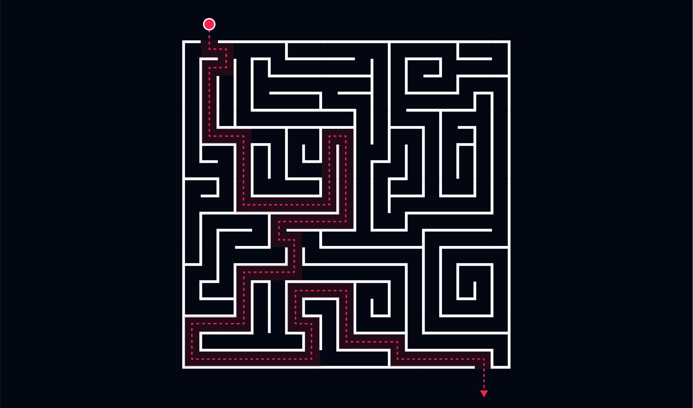
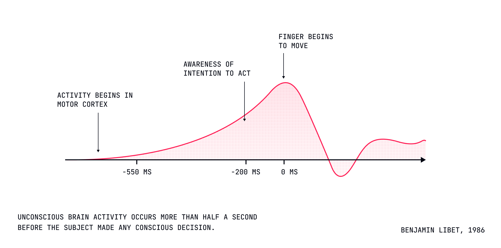
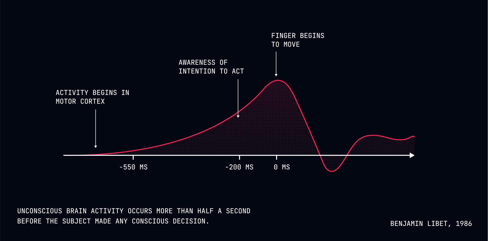

The Landscape of Choice
A practical map for navigating the illusion that you actually have any agency at all.
Dismantling The Illusion
You wake up each morning under the charming delusion that you're about to make a series of choices. What to wear, what to eat, whether to call in sick or drag yourself to work. But you don't actually make choices - you merely observe the outcomes of a series of predetermined processes that have been set in motion long before you even opened your eyes.
What if I told you that this comforting notion that you're the author of your life story, is an elaborate fiction your consciousness tells itself? Not in some abstract philosophical sense, but in a very literal, neurologically demonstrable way.


The Deterministic Reality
Consider a simple function that doubles a number:
function double(x) {
return x * 2;
}
This function is deterministic which means it will always
return the same output for the same input. If you pass in
2, it will always return 4. The
output is entirely determined by the input.
You are the same way. Your choices are simply the outputs of a complex function that takes in your genetic makeup, past experiences, and current circumstances as inputs. You will always produce the same output for the same input.
The only reason you think you have a choice is because the function is so complex that you can't see all the inputs. In reality, it's many functions chained together, each one feeding into the next.
function processA(input) {
return input * 3 + 2;
}
function processB(input) {
return input / 2 - 1;
}
function processC(input) {
return Math.pow(input, 2);
}
// Chain these functions together
function calculateResult(startingValue) {
const resultA = processA(startingValue); // First transformation
const resultB = processB(resultA); // Feed output into next function
const resultC = processC(resultB); // Final transformation
return resultC; // The final output
}
// This will always produce exactly 100 when input is 4
console.log(calculateResult(4));
This function is still deterministic but you can see how quickly the result becomes obfuscated when you chain together multiple functions. Now imagine this extrapolated out to your entire life - every single thing that has ever happened to you is an input to your decision-making process.
That time you congratulated yourself for choosing the salad instead of the burger? That was the inevitable result of being bullied at school, your recent doctor's appointment, and the attractive woman at the next table. The illusion that you could have chosen differently is just your brain's charming way of maintaining its sense of importance.
If you could run your life again from the beginning, every singe thing would happen the same way.
Understanding Your Decision Space


Your decisions are not the result of some grand, conscious deliberation. They are the product of a complex interplay of factors that you have no control over. In reality, your decisions are shaped by:
-
Biological Imperatives: The genetic algorithms running in the background of your consciousness, quietly determining your preferences while letting you believe they're "choices".
-
Environmental Conditioning: The invisible hand of your upbringing, guiding you toward predetermined outcomes while maintaining the comforting illusion of deliberation.
-
Psychological Patterns: Those recurring thought loops you mistake for deliberation but are actually just your brain running the same subroutines it always has.
-
Social Pressures: The subtle (and not-so-subtle) ways other predetermined beings influence your predetermined outcomes.
-
Resource Constraints: The practical limitations that narrow your "choices" to the point of inevitability, while your consciousness maintains the charade of agency.
None of these factors were chosen by you. They were given, inherited, imposed, or developed through processes entirely outside your control. Yet here you are, proudly.taking credit for their outcomes.
The Myth of Free Will


Your brain makes decisions before you are even aware of them. Neuroscience has repeatedly demonstrated that your conscious mind is merely informed of decisions after they've been made by unconscious processes. Your sense of having chosen is simply your consciousness creating a narrative to explain what already happened.
It's like when you ask a child if they want to eat broccoli or ice cream. We know they'll say ice-cream, but we pretend to give them a choice. The child feels empowered, but in reality broccoli was never on the table. The same is true for you.
Practical Implications
Liberation Through Understanding
When we finally accept that our decisions are predetermined by factors outside our control:
-
Self-Blame Dissolves: That embarrassing email you sent? You couldn't have done otherwise. It was the inevitable result of your sleep deprivation, caffeine intake, and childhood insecurities.
-
Anxiety Reduces: Worried about making the right choice about that job offer? Don't be. You'll inevitably do whatever your predetermined nature dictates. The outcome was written long before you became aware of the question.
-
Compassion Increases: That person who wronged you? They were simply acting out their programming. Their actions were as inevitable as the orbit of planets. How can you be angry at physics?
-
Action Simplifies: Once you stop pretending you're in control, you can simply observe what you do with the curious detachment of a scientist watching an experiment unfold. "Oh look, I'm reaching for another cookie. How fascinating."
Moving Through the Landscape
Rather than exhausting yourself with the pretense of "making the right choice," you can:
- Observe your decision-making patterns with the clinical interest of an anthropologist studying a strange tribe.
- Understand your predetermined tendencies as you would understand the predictable behavior of any natural system.
- Accept your limitations and constraints as you would accept gravity.
- Move forward with the effortless grace of water flowing downhill.
The Path Forward
Embracing Determinism
Understanding the deterministic nature of decision-making doesn't mean giving up. It means:
- Accepting that your path was carved out by forces beyond your control long before you became aware of it.
- Releasing the exhausting burden of believing you're responsible for outcomes you never controlled.
- Observing your actions with the same detached curiosity you might have watching a documentary about someone else's life.
- Moving forward with the peaceful knowledge that whatever happens was always going to happen.
Next Steps
In our next lesson, we'll explore "The Paradox of Agency" - how understanding your complete lack of free will can paradoxically lead to more effective action and greater peace of mind. Though of course, whether you continue this course was determined long before you clicked "enroll."
Remember: You're not choosing to move forward—you're simply observing the inevitable unfolding of your predetermined path. Isn't that comforting? No? Well, your discomfort was predetermined too.